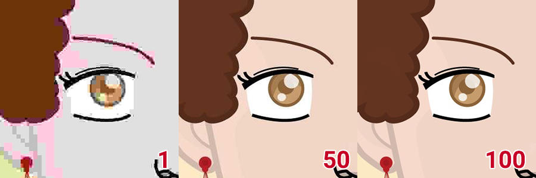

You can customize how the avatarMaker works by simply editing its configuration file. You can find it under the name avatarmaker.config.php.
This is a simple PHP file and each configuration key is conveniently commented and its type is stated above it.
Note
Unlike previous versions of the avatarMaker, if you edit the configuration file, the cache will be regenerated automatically.
Type: String
A Name that will be displayed in the client app to highlight your brand. Depending on the skin this may not be visible.
public $app_brand = "Your Name Here!";
Type: String
The avatarMaker comes with 9 languages ready to use and you can add more as you like. To activate one of the language files you need to specify its name here.
For instructions on how to add a new language, refere to the appropriate chapter: Custom Language.
These are the names of the supplied languages:
| Language | File Name |
|---|---|
| Italiano | it-it |
| English | en-us |
| العَرَبِيَّة | ar-ar |
| Deutsche | de-de |
| Español | es-es |
| Français | fr-fr |
| עִבְרִית | he-he |
| 日本語 | ja-ja |
| ру́сский | ru-ru |
public $app_local = "en-us";
Type: Boolean
Some skins may display a link to the inochiTeam website in an unobtrusive position.
If you set this key to false this link will be hidden.
Showing this link is absolutely optional, but if you do we will really appreciate it 😍.
public $app_displayCredits = true;
Type: Boolean
When the client app is loaded, it can generate a random avatar or display a default one built using the first item of each category.
public $app_randStartup = true;
Type: Boolean
The avatarMaker can output images with transparent background. This option is not available in the UI by default, as such behavior may not be desirable in all contexts. By setting this variable to true, the background options will be hidden and the user will not be able to select them. All the avatars generated through the UI will have a transparent background. This setting does not affect the REST API.
If instead, you want to add the transparent background among the other options you should refer to this FAQ: Add a fully transparent background option.
public $app_transparentBackground = false;
Type: Boolean
When a random avatar is generated, colors are randomized too and items previews need to be re-rendered to match the newly selected tone. Rendering all the previews at the same time can be taxing especially on each hardware like mobile devices. If the random avatar generation is too slow for your tastes you can decide to disable the update of the previews. The random avatar will be generated as expected.
To know more about this topic refere to the appropriate section in the FAQs The random avatar generation is too slow.
public $app_randUpdateColors = true;
Type: Boolean
If true, the UI will display a color picker alongside the presets and let the users choose any color they want for any palette.
public $app_allowCustomColors = true;
Type: String
This section of the configuration file allows you to change the default paths of all the folders required by the avatarMaker to work properly. Some folders need to be writable so make sure to set permissions accordingly.
All paths can be both absolute or relative.
Read-Only¶public $folder_assets = "assets/";
Read-Only¶public $folder_locals = "local/";
Writable¶public $folder_cache = "cache/";
Type: String
To meet needs of more users we have added support for ImageMagick alongside with PHP GD. It delivers superior quality but its availability is limited especially on shared hostings.
It your server supports it, we strongly recommend enabling it in the avatarMaker instead of GD.
To know more about the differences between this libraries check out the dedicated section in the FAQs PHP GD vs ImageMagick.
| Library | Alias |
|---|---|
| PHP GD | gd |
| ImageMagick | magick |
public $renderer_driver = "magick";
Type: String
The avatarMaker can output the generated avatars in 3 different formats and optionally save the output to the disk.
To set a specific output format, pick the corresponding alias from the table below. To save the output choose the _saved versions.
| Format | Alias | |
|---|---|---|
| JPG | jpg |
|
| JPG | jpg_saved |
The rendered image will be saved on the server |
| PNG | png |
|
| PNG | png_saved |
The rendered image will be saved on the server |
| GIF | gif |
|
| GIF | gif_saved |
The rendered image will be saved on the server |
public $renderer_format = "png";
Type: Integer [1, 100]
If you have decided to output your avatars as jpg files, you can set the quality of the image using this variable. Gif and PNG will not be affected by this setting.
The value must be an integer between 1 and 100, where 1 is the lowest quality and smallest file size.

public $renderer_quality = 90;
Type: String or Boolean
When rendering the final avatar you have the option to apply an overlay whether it is your logo or a simple line of text, if you set this valible to false nothing will be added.
| Value | Action |
|---|---|
false |
No overlay |
true |
The content of assets/overlay.png will be placed over the avatar |
String |
The text in the variable will be written in the bottom left corner of the avatar |
public $renderer_overlay = false;
public $renderer_overlay = "Overlay Text";
Type: Int
The sizes of the base images for the avatars in px. All images must be of the same sizes specified here. From version 3.1 the avatarMaker supports rectangular avatars.
public $renderer_assetsSizes = array(
'x' => 1024,
'y' => 1024
);
Type: Int
The sizes of the individual items in the cache. This setting will affect the preview quality and the speed of the UI.
A bigger cache file means longer update times and slower loading for the app while a smaller file will reduce the quality but increase the performances.
If you set the Y value to false, it will be calculated based on the aspect ratio of the source images.
public $renderer_cacheSizes = array(
'x' => 400,
'y' => false
);
Type: Array
This array holds the structure of the avatars, each entry is a layer and the order here will be followed while rendering the images.
In each row KEY => VALUE the key must be the name of a category folder inside the assets folder, the value is the id of a color palette or false if that category should not be colored.
This is an example:
"eyes" => false,
"eyebrows" => "hair",
The first line states that a layer eyes must be added to the avatar and it cannot be colored by the user, as the value is false.
This layer must come before the eyebrows layer, that, on the contrary, can be colored using the hair palette.
Note
Multiple layers can share a common palette, for example both hair and eyebrows can be color with the hair palette.
public $avatar_layers = array(
"background" => "background",
"ears" => "skin",
"head" => "skin",
"eyes" => false,
"eyebrows" => "hair",
"nose" => false,
"mouth" => false,
"hair" => "hair",
"objects" => "objects"
);
Type: Array
This new setting allows you to highlight items in the GUI. You can use it to attract attention to recently added parts.
Add a new key with the name of the layer containing the items to highlight and then as a value and array with all the names of the items.
public $avatar_featured_items = array(
"head" => ["face_1","face_6","face_10"],
"eyes" => ["eyes_5"],
);
Type: Array
In order to color a layer, you need to define a color palette to use. Palettes are nothing more than arrays of hex encoded colors with a unique name to identify them.
In the example below, you can see how to define them. Remember that the palette id MUST be unique.
public $avatar_palettes = array(
"background" => array(
"#ffffff",
---
"#333333"
),
"skin" => array(
"#f6d9cb",
---
"#9ccc65"
)
);